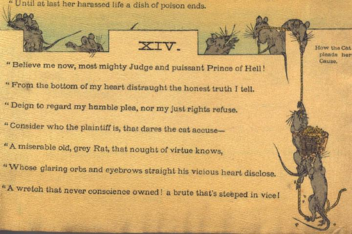

鼠の群れ。城壁の上に、穀物が盛られた籠を運びあげようとしている。壁の下にいる鼠は上から下ろされた縄を登っている。壁の上にいる鼠は縄を引っ張り上げたり、下の様子をうかがったりしている。
著作者：John Little Archibald／出典：親書誌：U426_nichibunken_0122：The rat's plaint／日付：2006／資源識別子：U426_nichibunken_0122_0009_0000
Copyright (c)2010- International Research Center for Japanese Studies, Kyoto, Japan. All rights reserved.